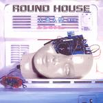

| Artist: | Round House |
| Title: | Jin-zo-Ni-N-Gen |
| Label: | Music Term MTP-102 |
| Length(s): | 54 minutes |
| Year(s) of release: | 1991/2002 |
| Month of review: | [12/2003] |
| 1) | Jin.zo-ni.n.gen | 3.48 |
| 2) | Tour Of The Deep Ocean | 15.37 |
| 3) | A Last Judgement | 3.40 |
| 4) | Out Of 3-dimension | 7.11 |
| 5) | Suisha Goya No Asa | 15.12 |
| 6) | Romantic Rally (bonus Track) | 8.19 |